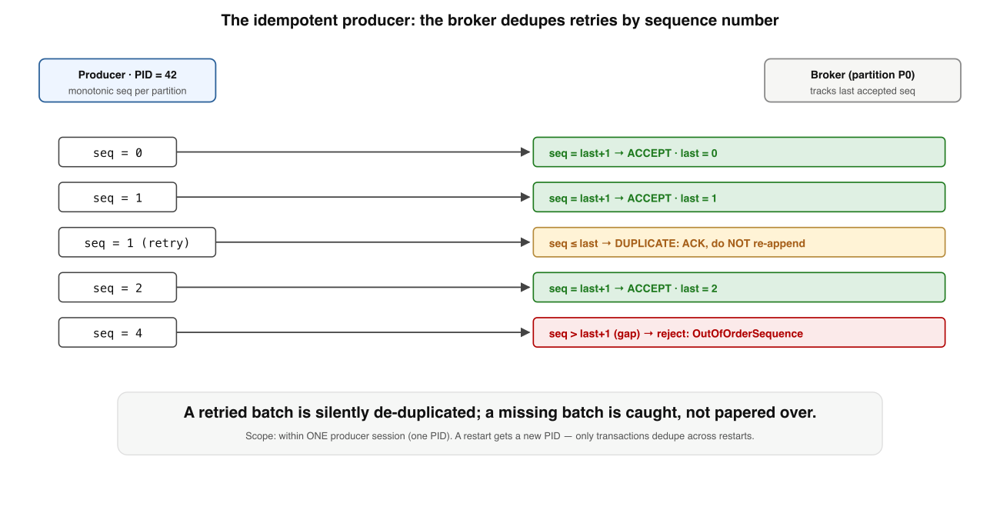
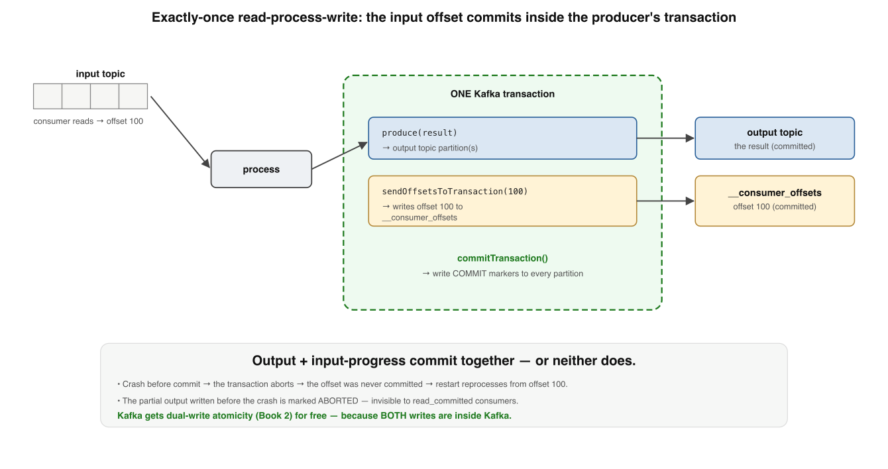
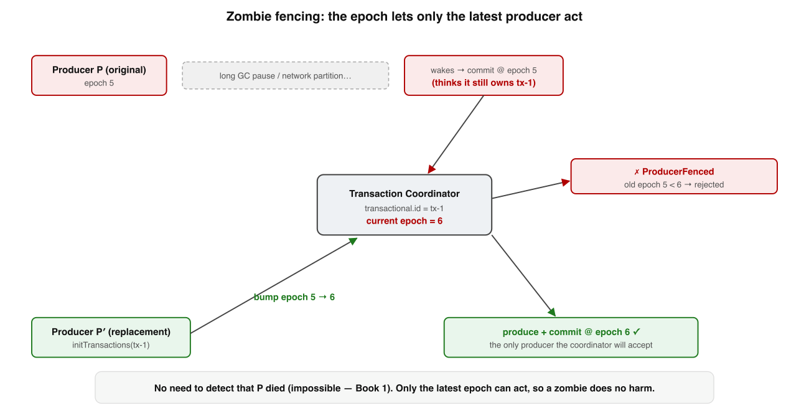

Your bar: on a whiteboard, derive why committing the consumer's input offset
inside the producer's transaction makes a read-process-write loop exactly-once — and name the exact
byte where the guarantee evaporates. Grounded in KIP-98, KIP-447, Confluent's canonical write-up,3
and Kleppmann's DDIA ch.11.4
One sentence holds the whole lesson. Each level unpacks one chip of it:
Kafka EOS is exactly-once processing, not deliveryfor the read-process-write loopbuilt from dedup + atomic txn + read_committed + fencingand it stops at Kafka's edge
Memorise this banner. Every level below explains one box, one arrow, or the dashed transaction that binds output to input-offset.
◆
What EOS actually promises (and doesn't)
Get the scope wrong and you'll ship a pipeline that thinks it's exactly-once and quietly isn't.
It is Exactly-once processing for the read-process-write pattern, entirely within Kafka: each input affects the output exactly once, across crashes and retries.
It is not Exactly-once delivery (impossible), not across a chain of external systems, and not a way to make "charge a card" happen once.
✗ "Exactly-once delivery — the message arrives exactly once"
✓ Exactly-once effects: each input affects the Kafka output once
🎯 Memory rule: EOS = exactly-once effects for Kafka→process→Kafka, from three mechanisms that must interlock — miss one and it duplicates in prod.
Memory check
Processing or delivery? → processing/effects; delivery is impossible (Lesson 2)
What shape does it cover? → read-process-write, Kafka in → Kafka out
How many mechanisms interlock? → four: dedup, atomic txn, read_committed, fencing
1
The idempotent producer — PID + sequence numbers
Smaller problem first: a producer retries a send — did the first one land? Dedup it at the broker.

The idempotent producer. Each batch carries a per-partition sequence number. The broker tracks the last one it accepted: a retry with an already-seen sequence is ACKed but discarded (dedup); a gap means data was lost, and the broker rejects it.The retry vanishes (≤ last); the normal next batch advances (last+1); a hole is refused (> last+1).
How On startup the broker assigns a Producer ID (PID); each batch carries a monotonic sequence number per (PID, partition) from 0. enable.idempotence=true — default since Kafka 3.0.
Why it needs ordering Requires acks=all and max.in.flight.requests ≤ 5 so the broker can dedupe the last few batches and keep them in order.
Like (code) An idempotency key on a POST — the server remembers the last key and silently drops the replay (Book 1, Lesson 2).
The scope limit Dedupes retries within one producer session (one PID). A process restart gets a new PID → old state no longer matches → cross-restart dupes slip through.
✗ "Idempotent producer means no duplicates, ever"
✓ Only within one PID's life; restart → new PID → transactions close the gap
🔢 Memory rule: Per-(PID, partition) sequence numbers — ≤ last is a dropped retry, last+1 accepts, > last+1 is a rejected gap.
Memory check
Three broker verdicts on a sequence number? → ≤ last drop, last+1 accept, > last+1 reject
Why acks=all + bounded in-flight? → so dedup keeps ordering of the last few batches
What breaks across a restart? → new PID; old per-PID dedup state no longer matches
2
Transactions — the loop made atomic
The whole trick: the output writes and the consumer's input offset commit all-or-nothing.

The exactly-once read-process-write loop. The producer writes its output AND commits the consumer's input offset inside ONE transaction. Commit writes markers to every partition. A crash aborts both, so on restart you reprocess from the last committed offset and the partial output is invisible.
beginTransaction()
produce(outputTopic, result) // 1+ output partitions
sendOffsetsToTransaction(inputOffsets, ...) // the consumer's progress ← the trick
commitTransaction() // markers to every partition, visible together
Setup A stable transactional.id survives restarts; initTransactions() registers it with a transaction coordinator (a broker, backed by __transaction_state).
The atomic setsendOffsetsToTransaction writes input offsets into __consumer_offsetsas part of the producer's transaction — so output and "we consumed those inputs" rise or fall together.
Commit The coordinator writes commit markers (control records) into every involved partition — outputs and __consumer_offsets — and the whole thing becomes visible at once.
Crash trace Produce output, die before commit → txn aborted → offsets never committed → restart reprocesses from last committed offset; the partial output is marked aborted, invisible.
✗ "Kafka solved the dual-write problem in general"
✓ It gets all-or-nothing only because both writes are inside Kafka, in one txn
🔗 Memory rule: Output + input-offset commit in one transaction — the offset and the output rise or fall together, so reprocess-after-crash never double-counts.
Memory check
What does the transaction atomically contain? → output records + the input-offset commit
Where do offsets actually get written? → __consumer_offsets, inside the txn
After a pre-commit crash, where does it resume? → last committed offset; partial output is aborted
3
read_committed and the Last Stable Offset
Producing transactionally is only half. The reader must opt in — or the duplicates leak anyway.
The LSO is the offset just before the first still-open transaction; read_committed never reads past it, and filters aborted records via the broker's markers.
read_committed Delivers only committed transactions, never reads past the Last Stable Offset, and filters aborted records using the broker's abort markers.
read_uncommitted (default) Returns everything — committed, aborted, and in-flight. A txnal producer with a default-isolation consumer is not EOS.
EOS is a whole-pipeline property Transactional producer andread_committed consumer. One without the other looks right in testing, duplicates in prod.
The cost Adds read latency: a consumer can't advance past an open txn, so a long-running transaction stalls its consumers at the LSO.
✗ "I produce transactionally, so it's exactly-once"
✓ Not unless every downstream consumer is also read_committed
🚧 Memory rule: A reader must be read_committed to honor EOS — it stops at the LSO and drops aborted records; the default sees the dupes the txn was meant to hide.
Memory check
What is the LSO? → offset just before the first still-open transaction
What does the default isolation level return? → everything: committed + aborted + in-flight
Cost of read_committed? → stalls at LSO behind a long open transaction
4
Zombie fencing — the transactional.id and the epoch
The genuinely distributed part: Book 1's "you can't tell slow from dead" in a new costume.

Zombie fencing via the epoch. Two producers share a transactional.id. The replacement's initTransactions bumps the epoch; the coordinator now rejects anything from the old epoch. When the zombie wakes and tries to commit, it is fenced — ProducerFenced — and cannot corrupt the output.
The hazard A GC pause / partition makes the orchestrator declare tx-1 dead and start a replacement with the same transactional.id. Two producers now think they own tx-1.
The fix: epoch The replacement's initTransactions() keeps the PID but bumps the epoch (5→6) and aborts the old epoch's open txn. Every request at the old epoch → ProducerFenced / InvalidProducerEpoch.
Why transactional.id must be stable So the new instance reclaims the same identity and bumps the epoch — otherwise the zombie isn't fenced.
The deep point EOS never has to correctly detect death (impossible, Lesson 1). It guarantees only the latest epoch can act, so a wrongly-declared-dead producer does no harm.
✗ "Fencing works by detecting and killing the zombie"
✓ It never detects death — it just rejects the old epoch; the zombie's writes are refused
🧟 Memory rule: Same transactional.id → bumped epoch → only the latest epoch can act; the woken zombie commits at the old epoch and is fenced.
Memory check
What gets bumped, and by what call? → the epoch, by the replacement's initTransactions()
What error fences the zombie? → ProducerFenced / InvalidProducerEpoch
Why does it dodge the FLP impossibility? → it never detects death, only enforces latest-epoch-wins
5
The boundary — where Kafka's exactly-once stops
The part that keeps people honest: everything above is Kafka→process→Kafka. Step outside and it doesn't apply.
EOS stops at the first byte that leaves Kafka. For that byte you still owe an idempotency key or the outbox pattern (Books 1–2).
External side effects The instant processing touches something outside Kafka, it's not in the txn — a crash-and-retry can repeat it. Back to the dual-write problem: idempotency keys or the outbox pattern.
Kafka Streams wraps itprocessing.guarantee=exactly_once_v2 manages the producer, the offset commit, and state-store changelog writes in-txn — so even stateful joins/aggregations are EOS.
EOS v2 (KIP-447) One producer per stream thread (not per input partition) — what made it scale to large topologies. Prefer Streams over hand-rolling the loop.
The cost, measured Coordinator round-trips + commit markers; commit.interval.ms (default 100 ms under EOS) trades latency vs overhead. Confluent: low single-digit % throughput hit with batching — the real cost is latency.
✗ "Turn on EOS and my whole pipeline is exactly-once"
✓ Only Kafka-to-Kafka; the DB / card / email still needs idempotency keys or an outbox
🧱 Memory rule: EOS is real and excellent — and it stops at the first byte that leaves Kafka. For that byte you owe an idempotency key or an outbox.
Memory check
What covers the byte that leaves Kafka? → idempotency key on the call, or the outbox pattern
What does exactly_once_v2 add over hand-rolling? → manages state-store changelog writes in-txn too
The real cost of EOS? → latency (commit interval + LSO stall), not throughput
Where each mechanism shows up — and what it buys
Grounding for the whiteboard: the mechanism, the config knob, and the failure it prevents.
Mechanism
Config / API
Failure it prevents
Idempotent producer
enable.idempotence=true, acks=all
Duplicate from a within-session retry after a network blip
Transaction
transactional.id, sendOffsetsToTransaction
Torn write across partitions; offset committed but output lost (or vice-versa)
Isolation level
isolation.level=read_committed
Downstream reading aborted / in-flight records → leaked duplicates
Epoch fencing
stable transactional.id + initTransactions()
A zombie (slow-not-dead) producer committing a stale transaction
Streams EOS v2
processing.guarantee=exactly_once_v2
Stateful aggregation/join losing or double-applying on crash
Outbox / idempotency key
app-level (DB + relay, or dedup table)
External side effect (DB, card, email) repeated on retry
Pattern to notice: EOS is a whole-pipeline property. Three knobs on the producer side, one on every consumer — and the moment a side effect leaves Kafka, you are back to Book 2's answers.5
Q1. The idempotent producer dedupes a retried batch when the broker sees a sequence number that is…
Q2. What makes the read-process-write loop exactly-once is that the transaction atomically includes…
Q3. A consumer reading a transactional topic with the default read_uncommitted isolation level…
Q4. A zombie producer cannot corrupt exactly-once because the replacement's initTransactions()…
Q5. Your pipeline produces transactionally but still emits duplicates downstream. Most likely cause?
Q6. Your processing also writes a row to Postgres. Kafka EOS covers that write…
Reconstruct the guarantee from a blank page
Write the four interlocking mechanisms in order, one line each, then the boundary — with nothing on screen. Reveal and compare; gaps are your next drill.
1 Idempotent producer: per-(PID,partition) seq numbers dedup retries (≤last drop, last+1 accept, >last+1 gap) ·
2 Transaction: output + sendOffsetsToTransaction commit all-or-nothing; commit markers to every partition ·
3read_committed: reader stops at LSO, filters aborted — EOS is a whole-pipeline property ·
4 Epoch fencing: stable transactional.id bumps the epoch; old epoch → ProducerFenced ·
5 Boundary: stops at the first byte leaving Kafka → idempotency key or outbox.
I'm your teacher — ask me anything. Say "grill me on Kafka EOS" for mixed no-clue
questions, or describe a real pipeline and I'll trace where it's genuinely exactly-once and where it silently
leaks. Want the crash-trace walked step by step, or the next lesson with spaced drills? Just ask.
Interview — pick your bar
Answer out loud in ~60s, then reveal. Core = recall · Senior = trade-offs & failure modes · Staff = synthesis under ambiguity · System Design = open design round (a different axis, not a harder level).
"Exactly-once in Kafka" — exactly-once what? Define the scope precisely.
Hits: exactly-once processing/effects for the read-process-write pattern, entirely within Kafka. NOT exactly-once delivery (impossible), NOT across external systems, NOT "charge the card once." Red flag: "the message is delivered exactly once."
What does the idempotent producer do, and what does it require?
Hits: on by default for EOS; the broker assigns a PID and tracks the last accepted sequence per (PID, partition) so a retried produce is deduped at the broker. It requires acks=all and bounded in-flight requests to preserve ordering, and it is scoped to a single producer session — a restart re-PIDs, so the idempotent producer alone does not survive a crash.
What is read_committed, and why must every consumer set it for EOS?
Hits:read_committed makes the consumer skip aborted and still-open transactional records and stop at the Last Stable Offset, so it only sees committed output. The default is read_uncommitted, which returns aborted + in-flight records. EOS is a whole-pipeline property: a transactional producer with a default-isolation consumer is not exactly-once.
Where are consumer offsets stored, and why does that matter for transactions?
Hits: offsets live in the internal __consumer_offsets topic, keyed by group/partition — a regular Kafka topic. Because the input offset is itself just another Kafka write, it can be enrolled in the same producer transaction via sendOffsetsToTransaction, which is exactly what lets "we consumed these inputs" commit atomically with the output.
Walk me through how a per-partition sequence number dedupes a producer retry.
Hits: broker assigns a PID, tracks last accepted seq per (PID, partition); seq ≤ last → ACK but discard (the dedup), = last+1 → accept, > last+1 → reject OutOfOrderSequence (a gap = lost data). Bonus: needs acks=all + bounded in-flight to keep ordering; scoped to one PID, so a restart re-PIDs and this alone doesn't survive it.
Why does committing the consumer's input offset inside the producer's transaction make the loop exactly-once?
Hits:sendOffsetsToTransaction writes the offset to __consumer_offsets as part of the txn, so output and "we consumed those inputs" commit together or not at all. Crash before commit → both abort → restart reprocesses from the last committed offset, partial output is aborted/invisible. It's the dual-write problem solved only because both writes are in Kafka.
I produce transactionally but downstream still sees duplicates. Diagnose it.
Hits: the consumer is almost certainly default read_uncommitted, which returns aborted + in-flight records. EOS is a whole-pipeline property — txnal producer andread_committed consumer. The half-measure passes testing and duplicates in prod.
What's the LSO, and what does read_committed cost you?
Hits: the Last Stable Offset is the offset just before the first still-open transaction; a read_committed consumer never reads past it and filters aborted records via markers. Cost: a long-running transaction stalls its consumers at the LSO — read latency bounded by how long transactions stay open.
What is a "zombie" producer, and how does Kafka stop it without solving failure detection?
Hits: a slow/partitioned producer wrongly declared dead; a replacement starts on the same transactional.id. Fix: initTransactions() bumps the epoch and aborts the old open txn; the coordinator rejects the old epoch (ProducerFenced/InvalidProducerEpoch). It never detects death — only the latest epoch can act, dodging the FLP/"slow vs dead" impossibility.
Your processing also writes to a SQL DB and charges a card. How far does Kafka EOS get you?
Hits: not at all for those — they're outside the transaction, so a crash-and-retry repeats them. You owe an idempotency key on the external call or the outbox pattern (write DB + outbox in one local txn, relay to Kafka). Nothing spans Kafka and your DB in one transaction.
Distinguish the two failure modes — a duplicate and a gap — in the EOS machinery.
Hits: a duplicate comes from at-least-once delivery (retry after an ACK was lost) and is killed by the idempotent producer's sequence dedup or, end-to-end, by idempotent effects. A gap is data loss: the broker sees seq > last+1 (OutOfOrderSequence) or an offset committed before its work ran (at-most-once). Duplicates are recoverable; gaps are not — which is why the safe default is at-least-once + idempotency, never commit-before-process.
System Design — what a strong design round demonstrates:
State the scope up front: exactly-once effects for read-process-write, Kafka-to-Kafka; anything leaving Kafka is out of the transaction.
Configure every downstream consumerread_committed — call out that omitting this silently breaks EOS.
Show the atomic loop: consume → process → produce + sendOffsetsToTransaction → commitTransaction.
Handle restarts with epoch fencing; for stateful work prefer Kafka Streams exactly_once_v2 (KIP-447).
Gate any external side effect behind an idempotency key or the outbox pattern.
Name the cost: long transactions stall consumers at the LSO; tune commit.interval.ms for latency vs overhead.
Design an exactly-once enrichment job (Kafka in, enrich, Kafka out).
A strong answer covers: a transactional producer with a stable, instance-uniquetransactional.id; the loop = consume → process → produce + sendOffsetsToTransaction → commitTransaction; downstream consumers set read_committed; commit.interval.ms tuned for latency vs overhead; epoch fencing relied on for restarts; Kafka Streams exactly_once_v2 if state is involved; and any external side effect gated behind an idempotency key/outbox. The candidate should name the boundary explicitly: EOS stops at the first byte leaving Kafka.
Design an exactly-once pipeline whose last step charges a payment provider.
A strong answer covers: accept that Kafka EOS cannot enroll the payment call, so the network step is at-least-once by nature; assign a deterministic idempotency key per logical charge (derived from the event id, not generated per attempt) and pass it to the provider so retries are no-ops; or use the outbox — record "charge requested" in a local DB txn, relay to a worker that calls the provider idempotently and records the result; reconcile on startup; and surface the unavoidable truth — exactly-once delivery across the boundary is impossible, so you build exactly-once effects with dedup + reconciliation, plus a DLQ and alerting for charges that neither confirm nor fail.
No — stops at the first byte leaving Kafka; use idempotency key / outbox
Three rules for the design review
① EOS is a whole-pipeline property — a txnal producer with a read_uncommitted consumer is not EOS. ② Fencing never detects death; it enforces latest-epoch-wins, so a stable transactional.id is mandatory. ③ The moment a side effect leaves Kafka, you owe an idempotency key or an outbox.
★ Review guides & what to read next
5-min (weekly) Don't re-read — recall. Say the one sentence; redraw the EOS loop with the dashed transaction; recite the three broker seq-number verdicts and the epoch-fencing rule; name the boundary.
30-min (when stalled) Blank-page reconstruct all four mechanisms + boundary; trace a pre-commit crash end to end; then place one real pipeline — where is it genuinely EOS, and where does it leak?